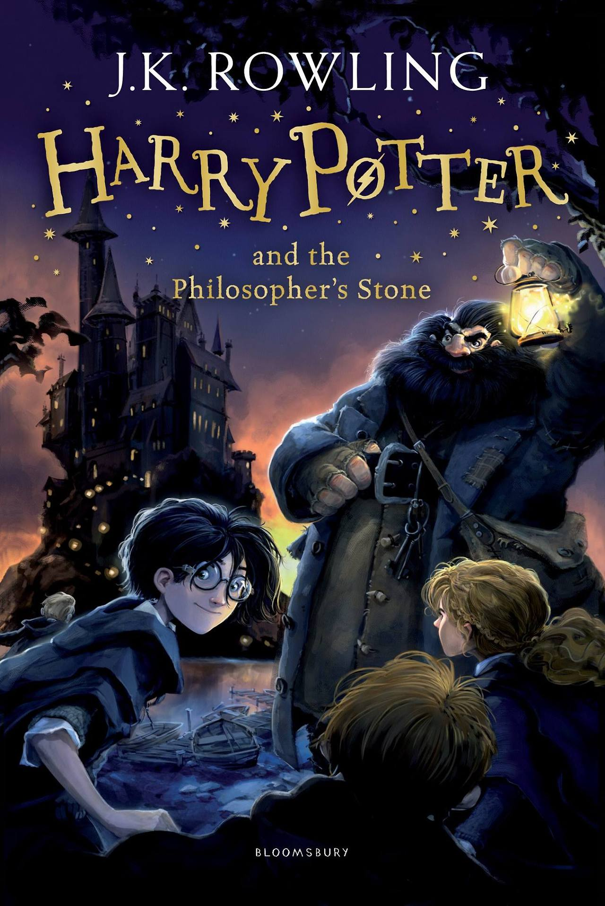

1.Harry Potter and the Chamber of Secrets

Harry Potter is about to start his second year at Hogwarts. Harry expects it to be a normal year after his experiences the term before but a secret chamber opens,
muggle-born students are attacked and Harry must put his life in danger once more.
The three main characters in the story are Harry Potter – a young wizard who finds out he can speak Parselmouth (talk to snakes) and is mistaken for the heir of Slytherin; Ron Weasley
– Harry’s best friend who steals his Father’s flying car to fly himself and Harry to Hogwarts; and Hermione Granger – Harry’s other best friend who is the smartest student in their year
at school but who is petrified when the attacks start. The new Defence against the Dark Arts teacher is Gilderoy Lockhart who is a self-obsessed lunatic of a teacher.
I enjoyed this book because it is packed with action, fantasy and creativity. My favourite part is when Harry is pulled into Riddle’s diary and is made to witness the expulsion of
his friend Hagrid when he was at Hogwarts 50 years before.
There are not many people who haven’t read this series but I would recommend this to anyone who loves fantastical stories and it is definitely worth 5 stars
2.Harry Potter and the Philosopher’s Stone

Harry Potter and the Philosopher's Stone is a fantasy novel written by British author J. K. Rowling. The first novel in the Harry Potter series and Rowling's debut novel,
it follows Harry Potter, a young wizard who discovers his magical heritage on his eleventh birthday, when he receives a letter of acceptance to Hogwarts School of Witchcraft
and Wizardry. Harry makes close friends and a few enemies during his first year at the school, and with the help of his friends, Harry faces an attempted comeback by the dark
wizard Lord Voldemort, who killed Harry's parents, but failed to kill Harry when he was just 15 months old.
The book was first published in the United Kingdom on 26 June 1997 by Bloomsbury. It was published in the United States the following year by Scholastic Corporation under the
title Harry Potter and the Sorcerer's Stone. It won most of the British book awards that were judged by children and other awards in the US. The book reached the top of the New
York Times list of best-selling fiction in August 1999 and stayed near the top of that list for much of 1999 and 2000. It has been translated into at least 73 other languages,
and has been made into a feature-length film of the same name, as have all six of its sequels.
3.Harry Potter and the Prisoner of Azkaban

Published in 1999, Harry Potter and the Prisoner of Azkaban is the third book in the Harry Potter series. And this happens to be the novel that really kicked off the Harry Potter
craze in America. It was already big in Britain, but it became much more of a worldwide phenomenon after Azkaban (and for good reason, as we'll see). Case in point: check out the
huge upswing in interviews that J.K. Rowling did to promote the novel.
This was the last time that a new Harry Potter book was released out of sync as well, much to the relief of newly obsessed American fans. See, for the first three novels, Britain
got the books before the United States did. In this case, Azkaban came out in Britain in July 1999; Americans had to wait until September to get their hands on it. Can you imagine
that delay occurring for Book 6? There would be rioting in the streets. Disproportionate numbers of Americans would be on planes to London. And there were already a lot of impatient
fans all the way back in 1999.